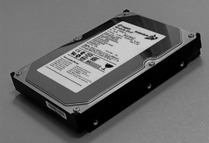
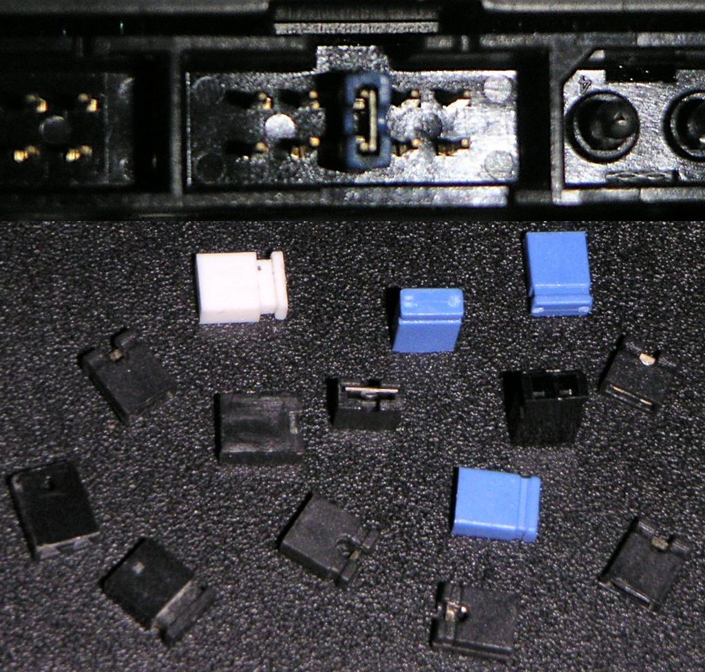

Configuració, diagnòstic i interconnexió d'equips
A part dels components fonamentals, l’ordinador pot disposar d’una sèrie d’ampliacions que es coneixen habitualment com a perifèrics, si retallem l’expressió “dispositius perifèrics”. Aquests components de maquinari poden ser fonamentals per a la utilització de l’ordinador per part d’un usuari, com pot ser el cas d’un monitor de visualització, o poden ser simplement una ampliació que permet un ús més productiu del sistema informàtic, com per exemple el ratolí.
Aquests components addicionals permeten una configuració personalitzada de les funcions de l’equip que permetrà ajustar el rendiment i funcionament de l’equip a les tasques per a les quals ha estat dissenyat.
A la unitat “Instal·lació, configuració i recuperació de programari” podeu trobar informació sobre els sistemes operatius.
Un cop configurat el maquinari bàsic i els perifèrics, els ordinadors necessitaran un sistema operatiu que s’ajusti a la seva vegada a les funcionalitats establertes en la fase de disseny de l’equip.
Els perifèrics. Classificació
De fet, els perifèrics són aquells dispositius que, tot i formar part de l’ordinador, es troben fora del contenidor principal (anomenat caixa o torre), malgrat que en ordinadors de tipus compacte, com per exemple els portàtils, aquests ja es troben integrats en el sistema. Per tant, el concepte “perifèric” fa referència no tant a la posició física d’un component com a la seva situació lògica respecte al bus principal del sistema. En certa manera, tot allò que no sigui la unitat de procés central i la memòria principal i el bus del sistema és considerat perifèric. En alguns casos també es consideren perifèrics els dispositius de memòria secundària (per exemple, el disc dur).
Els perifèrics són aquells dispositius que formen part del maquinari d’un sistema informàtic i amplien les funcionalitats dels components fonamentals: CPU, memòria principal i bus del sistema.
Es pot considerar la part central de l’ordinador la que es troba dintre de la carcassa o caixa i un usuari rarament veu. La resta de dispositius externs a aquesta carcassa que formen el sistema informàtic se solen anomenar perifèrics.
Així, doncs, a la part central o interna d’un ordinador trobem, com a elements més importants, els següents:
- La carcassa
- La font d’alimentació
- La placa base
- El processador
- La memòria
- El disc dur
- La disquetera
- Els lectors i gravadors de CD i DVD
- La targeta gràfica
- La targeta de so
- La targeta de xarxa
- El mòdem intern
Fora de la carcassa, trobarem els elements externs o perifèrics. De perifèrics n’hi ha de molts tipus, depenent de les necessitats. Els perifèrics imprescindibles en els sistemes informàtics actuals són els següents:
- Monitor
- Teclat
- Ratolí
Hi ha diverses classificacions per a organitzar els tipus de perifèrics. La més habitual és la següent:
- Perifèrics d’entrada. Perifèrics que permeten introduir dades des de l’exterior de l’ordinador cap a la part central. Són exemples de perifèrics d’entrada els següents:
- Teclat
- Ratolí
- Micròfon
- Escàner
- Càmera web
- Perifèrics de sortida. Perifèrics que permeten extreure dades des de l’interior de l’ordinador o part central cap a l’exterior o usuari. Són exemples de perifèrics de sortida els següents:
- Monitor
- Altaveus
- Auriculars
- Impressora
- Perifèrics d’entrada/sortida. Perifèrics que permeten introduir i extreure informació de l’ordinador. Com a exemple de perifèric d’entrada/sortida es podria esmentar la pantalla tàctil, que visualitza la informació a la vegada que permet introduir-ne de nova per mitjà de les pulsacions.
El concepte de perifèric es pot considerar de manera àmplia, i es poden incloure també entre els perifèrics els dispositius d’emmagatzematge no primari (com els discos durs, disquets o discos òptics), els dispositius de comunicació (com ara les targetes de xarxa o els mòdems) i els elements de comunicació (com les targetes de so o les targetes gràfiques). En aquest sentit més ampli, un perifèric és un dispositiu o component que s’afegeix a l’ordinador per a afegir funcionalitats addicionals a les bàsiques.
Perifèrics d'emmagatzematge
Els perifèrics d’emmagatzematge serveixen per desar dades i informació per un temps llarg, al contrari que la memòria de treball.
Una classificació dels més importants és la següent:
- Disc dur
- Discos òptics
- Discos SSD
- Memòria USB
- Lector de targetes
El disc dur
Els discos durs són uns discos magnètics amb una gran capacitat d’emmagatzematge que, generalment, són instal·lats a l’interior de l’ordinador. Els discos durs implementen un sistema de memòria no volàtil (la informació es conserva una vegada es desconnecten del corrent elèctric).
- 
- Disc dur
Els discos durs es coneixen també amb el terme anglès hard disk o les abreviacions HD o HDD (hard disk drive).
Estructura interna d'un disc dur
Un disc dur està constituït, bàsicament, pels elements següents:
- Una carcassa que protegeix les parts internes.
- Un o diversos plats amb la superfície de material magnetitzable.
- Un motor que fa girar tots els plats alhora.
- Una sèrie de capçals lectors subjectats per braços per a accedir als plats.
- També sol incorporar, com a mínim, un circuit imprès que fa les tasques de controlador de disc.
Els discos durs estan organitzats de la manera següent (vegeu la figura):
- Cada plat del disc té dues cares. Cada cara es divideix en cercles concèntrics anomenats pistes o tracks.
- S’anomena cilindre un conjunt de pistes alineades en els diversos discos.
- Cada pista conté diversos sectors. Un sector conté 512 bytes.
Els sistemes de fitxers poden definir un clúster com el nombre mínim de sectors seleccionables, és a dir, el nombre mínim d’informació que es pot llegir o escriure en bloc. Si es defineixen clústers molt grans s’optimitzen les operacions de lectura i escriptura, però se sol perdre força espai, ja que qualsevol fitxer s’haurà d’incloure en un nombre enter de clústers, i l’espai no usat en el seu interior es perd.
La densitat de gravació és la quantitat de dades emmagatzemada per unitat de superfície. Així, doncs, per a augmentar la densitat de gravació hi ha dues possibilitats: disminuir la distància entre pistes o bé augmentar el nombre de bits dintre d’un sector.
Característiques dels discos
Un disc dur se sol caracteritzar pels elements següents:
- Capacitat. Quantitat d’informació que pot contenir (per exemple 120 GB, 2 TB…).
- Dimensions. Habitualment, els discos són de 3,5 polzades, tot i que en ordinadors portàtils solen ser de 2,5 polzades.
- Nombre d’operacions d’E/S per segon. Els valors típics són de prop de 50 operacions d’E/S aleatòries. Les operacions seqüencials poden ser moltes més, ja que no cal localitzar la dada a transferir.
- Velocitat de rotació. Normalment, velocitat angular, per exemple revolucions per minut (rpm). Això implica que, en els sectors de les pistes més externes, els capçals recorreran més distància per unitat de temps, per exemple 7.200 rpm. Com més velocitat de rotació, més energia i més calor es desprèn.
- Nombre de sectors absoluts, o bé nombre de pistes i nombre de sectors per pista.
- Temps de cerca (seek time). Temps que triga un capçal a trobar la pista que conté la informació demanada. Aquest temps depèn del lloc on sigui el capçal en el moment de la petició. Si és en una pista molt propera, el seek time és relativament petit (un o dos mil·lisegons), altrament triga fins a 15 mil·lisegons.
- Latència (rotational delay). Una vegada seleccionada la pista, el temps que comporta localitzar el sector concret és la latència (aquest temps pot ser d’uns 2 mil·lisegons). Com més velocitat de rotació del disc, menys latència.
- Temps mitjà d’accés. Mitjana de la suma del temps de cerca més la latència.
- Temps de transferència. Mesura, en megabits per segon (Mbps), la capacitat de llegir sectors i transferir-los a la controladora o memòria cau.
Format i particions
El format del disc és la manera en què s’hi organitzaran les dades. Hi ha dos tipus de format, el físic i el lògic.
El format físic consisteix a dividir el disc en sectors de 512 bytes cadascun. Aquest format se sol fer, si cal, mitjançant el BIOS.
El format lògic consisteix a incorporar l’estructura en el disc per al sistema de fitxers i el sector d’engegada o boot sector, que contindrà la informació mínima per a engegar un sistema operatiu o aplicació instal·lats en aquest.
Els sistemes de fitxers solen estar associats a un sistema operatiu; els sistemes operatius Windows solen usar sistemes de fitxers de tipus FAT16, FAT32 o NTFS, mentre que els sistemes operatius Linux solen usar sistemes de fitxers com ara ext3 o ext4.
Un disc dur es pot particionar en unitats més petites, i cada partició es pot formatar amb un sistema de fitxers diferent. Una partició és l’establiment de divisions lògiques en un disc dur, normalment per a instal·lar-hi diversos sistemes operatius, o bé per a organitzar les dades amb unitats lògiques diferenciades.
Tradicionalment, en l’MS-DOS i el Windows hi ha la limitació de quatre particions de tipus primari (en què cadascuna pot contenir un únic sistema operatiu), tot i que en un moment determinat, només pot estar-ne activa una (la partició “per defecte”). Hi pot haver, però, altres particions anomenades particions esteses. Les particions esteses poden contenir una o diverses particions lògiques.
Estàndards d'interfícies i de control
Els discos durs es connecten a les interfícies de la placa base preparades per a allotjar-los. Associades a aquestes interfícies, hi ha uns estàndards de sistemes de control. Els estàndards següents són els més comuns:
Es recomana consultar la secció “Annexos” del material web per a identificar els cables connectors de cadascun d’aquests tipus de connexió.
- IDE (integrated device electronics). És un sistema de connexió per a dispositius d’emmagatzematge basat en ATA (advanced technology attachment) o Parallel ATA. Els discos durs es connecten a les interfícies de 40 pius que els permeten la transmissió de les dades i del control, i per uns cables d’alimentació provinents de la font d’alimentació
- SCSI (small computer system interface). Es tracta d’un sistema d’alt rendiment que, normalment, es fa servir per a discos durs de servidors. És més car que el sistema IDE.
- S-ATA o Serial ATA. Proporciona una velocitat més elevada de transmissió que el sistema Parallel ATA. Té la capacitat de connectar els discos “en calent” (una vegada l’ordinador ja està engegat) i permet connectar fins a set o quinze dispositius S-ATA. És compatible amb IDE.
Modes de transferència
Els principals fabricants (Seagate, Iomega, Western Digital) ofereixen discos durs amb capacitats ja habituals de centenars de gigabytes.
Hi ha diversos sistemes per fer la transferència de dades del disc dur al processador o memòria. La implementació d’una o altra depèn, bàsicament, de la capacitat del BIOS i del joc de xips de la placa base d’adoptar aquests mètodes:
- PIO (programmed input/output). Sistema en el qual és el processador l’encarregat de controlar les peticions de lectura/escriptura en disc. És un sistema molt lent i poc eficient que requereix que la CPU destini molt de temps a aquest tipus d’operacions i al seu control.
- DMA (direct memory access). El seu ús està condicionat a la presència d’aquesta característica en el joc de xips de la placa base. En aquest cas, es transfereixen les dades des del disc a la memòria o viceversa sense que hi intervingui el processador. El controlador de la DMA és el que gestiona la transferència.
- Ultra DMA. Sistema que millora l’anterior. Exemples d’aquest tipus són ATA-6 i ATA-7.
- Block mode. Sistema que consisteix a agrupar diverses operacions de lectura o escriptura per a controlar-les conjuntament. Comporta una millora en el rendiment. Aquesta característica s’ha d’activar (en cas de ser suportada) mitjançant el BIOS.
Memòria cau de disc
La majoria de discos disposen de sistemes de memòria cau per a millorar els temps d’accés als sectors. Així, en aquestes memòries cau, es pot emmagatzemar el que es preveu que se sol·licitarà en un futur immediat, i també la cua d’escriptures pendents en disc.
Aquestes memòries cau poden estar incorporades en el disc dur mateix, en targetes a part, o poden fer ús de la memòria principal per a aquesta finalitat.
Discos òptics
Els discos òptics són suports d’informació de gran capacitat formats per superfícies circulars de policarbonat en què la informació s’emmagatzema perforant la superfície plana.
La informació s’emmagatzema en una espiral que cobreix tota la superfície del disc, i que va de la part interior a l’exterior.
La densitat de bits per unitat de superfície és idèntica en tot el disc, i la velocitat de lectura de bits també és constant; per tant, la velocitat de rotació angular no serà constant, ja que per a llegir la part interior del disc s’haurà de fer girar més ràpid.
La informació es llegeix aprofitant les propietats opticoreflectives de la incisió de la llum làser en la superfície perforada.
Tipus de discos òptics
Hi ha dos tipus principals de discos òptics usats habitualment en els sistemes informàtics, els quals es divideixen en diversos subtipus depenent de la funció per a la qual es vulguin utilitzar. Els més comuns en informàtica són els següents:
- CD (compact disc):
- CD-ROM (compact disc-read only memory). Disc òptic de només lectura (escrit durant la fabricació).
- CD-R (compact disc-recordable). Disc gravable, una única vegada (s’hi pot escriure per l’acció d’un feix làser).
- CD-RW (compact disc-rewritable). Disc reenregistrable (s’hi pot escriure diverses vegades).
- DVD (digital versatile disc):
- DVD-ROM (digital versatile disc-read only memory). Successors dels CD-ROM (escrits durant la fabricació).
- DVD-R (digital versatile disc recordable). Gravable, una única vegada.
- DVD+R. Com els DVD-R però creats per una altra aliança de fabricants.
- DVD-RW (digital versatile disc rewritable). Disc reenregistrable (s’hi pot escriure diverses vegades).
- DVD+RW. Igual que els DVD-RW però creats per una altra aliança de fabricants.
Externament, tots aquests discos presenten un aspecte similar: són discos òptics, majoritàriament de 12 cm de diàmetre.
La diferència més important entre els CD i els DVD és la quantitat d’informació que s’hi pot emmagatzemar. En els DVD, s’ha disminuït la distància entre pistes i la distància entre bits, i això ha fet que es puguin emmagatzemar en el mateix espai físic (12 cm de diàmetre) molts més bits. Mentre que els CD solen emmagatzemar uns 800 MB, tot i que hi ha variants, els DVD solen emmagatzemar 4,7 GB (els d’una sola cara i capa).
Entre les tecnologies DVD es poden distingir les següents:
- DVD d’una cara.
- DVD de dues cares (amb informació per les dues cares).
- DVD d’una capa (la informació està escrita en forma d’espiral en una sola dimensió).
- DVD de dues capes (la informació està escrita en dues capes diferents, com en dues superfícies superposades. L’enfocament de la lent làser és el que permet obtenir la informació de cadascuna de les cares). Aquesta tecnologia dobla la capacitat de la cara.
Aleshores, comercialment, es poden trobar DVD de diversos formats:
- DVD-5: DVD d’una sola cara i una sola capa.
- DVD-9: DVD d’una sola cara i doble capa.
- DVD-10: DVD de doble cara i una sola capa per cara.
- DVD-18: DVD de doble cara i doble capa a cada cara.
En ordinadors actuals és possible ja trobar unitats de Blu-ray Disk (el nom fa referència al làser blau utilitzat per a la lectura/escriptura). Es tracta d’un format de disc òptic amb el mateix format físic que el CD o el DVD. Ha estat creat per a l’emmagatzematge de vídeo d’alta definició o grans quantitats de dades. La seva capacitat arriba fins als 50 GB. Hi ha en estudi suports de fins a 400 GB.
Els formats més actuals són els següents:
- Blu-ray d’una capa: 25 GB.
- Blu-ray de doble capa: 50 GB.
Aquest format es va imposar al seu competidor (l’HD DVD) en la guerra de formats per convertir-se en el successor del DVD, encara que actualment el DVD encara és majoritari.
Tipus de dispositius de lectura/escriptura de discos òptics
Hi ha diferents dispositius que permeten accedir a la informació d’aquests discos òptics:
- Lectors de CD.
- Lectors de DVD.
- Gravadors de CD (que inclouen la lectura de CD).
- Gravadors de DVD (que inclouen la lectura de DVD).
- Lectors de Blu-ray.
- Gravadors de Blu-ray (que inclouen la lectura de CD i DVD).
Actualment, se solen oferir totes les funcions o algunes (lectura i escriptura de CD i de DVD) en un únic dispositiu lector/gravador d’aquests diversos formats. Així, trobem dispositius com ara els següents:
- Lectors de CD i DVD (que tenen dos capçals, un per llegir CD i l’altre per als DVD).
- Lectors de Blu-ray, DVD i CD.
- Gravadors (i lectors) de CD i DVD.
- Gravadors de Blu-ray (compatibles amb CD i DVD).
Totes les unitats actuals són capaces d’enregistrar dades en suports gravables (un cop) com CD-R o DVD-R i regravables (diversos cops) com el CD-RW o el DVD-RW. Això inclou els discos Blu-ray regravables que, malgrat el seu elevat preu, es troben disponibles en el mercat.
Unitats basades en memòria flaix
La memòria flaix és un tipus d’emmagatzematge desenvolupat a partir de la memòria EEPROM (electrically erasable programmable read only memory) que permet múltiples lectures i escriptures en un dispositiu no volàtil.
És un tipus de memòria molt resistent als cops, de baix consum i silenciosa, ja que no conté motors o parts mòbils com els discos magnètics tradicionals. A més, la seva mida petita ha propiciat la proliferació de formats d’emmagatzematge portàtils basats en aquesta tecnologia. Com a inconvenient podem trobar que el nombre de vegades que es pot escriure i esborrar és limitat, i pot arribar a nombres entre 10.000 i un milió de cops, depenent del procés de fabricació i altres factors.
Els tipus de dispositius d’emmagatzematge més freqüents basats en aquest format són:
- Memòria USB (universal serial bus). També coneguda com a llapis de memòria. És un dispositiu portàtil de mida compacta (com un clauer) que pot emmagatzemar actualment fins a 256 GB en algun model. S’han convertit en el sistema d’emmagatzematge i transport personal de dades més utilitzat, i ha desplaçat definitivament els disquets flexibles, però també els formats òptics com CD o DVD. Es tracta de dispositius plug & play (“endollar i llest”) que reconeixen gairebé tots els sistemes operatius actuals sense necessitat de controladors afegits.
- Targetes de memòria. És també un dispositiu en forma de petita targeta de dades. S’ha popularitzat a partir de les càmeres digitals, però s’ha estès a altres dispositius com les càmeres de vídeo, PDA, reproductors multimèdia o telèfons mòbils. Conviuen múltiples formats (Compact Flash, Secure Digital, xD-Picture Card…) en diverses mides i capacitats, que arriben fins als gigabytes en alguns casos. Per a poder llegir-les en un ordinador personal cal disposar d’un lector de targetes que habitualment és capaç de reconèixer-ne múltiples tipus (són habituals els que en llegeixen 16 tipus diferents).
- Unitats d’estat sòlid (SSD, de l’anglès solid state drive). Aquest dispositiu en format de disc dur utilitza memòria no volàtil com la flaix per a emmagatzemar dades en lloc del suport magnètic amb plats i capçal dels discos habituals. El fet de no tenir parts mòbils redueix molt el temps de cerca, la latència i altres paràmetres vitals d’un suport d’aquest tipus. A més, és més immune a les vibracions externes i als cops, de manera que s’ha estès molt el seu ús per a ordinadors portàtils, sobretot del tipus UMPC (ultra mobile PC) que solen tenir fins a 10 polzades de pantalla.
En general s’ha estès molt l’ús dels dispositius basats en memòria flaix, gràcies a la facilitat de transport i a la immunitat contra pols, ratllades, etc. –enfront d’altres dispositius d’emmagatzematge, com els disquets, CD o DVD–, a la velocitat d’accés que ofereixen, i al nombre i flexibilitat d’escriptures que permeten.
Perifèrics de comunicacions
Els perifèrics de comunicació són aquells que s’encarreguen de comunicar-se amb altres màquines o ordinadors, per treballar en conjunt o simplement per enviar i rebre informació.
Els més utilitzats són els següents:
- Targeta Ethernet
- Mòdem
- Targeta sense fil
La targeta de xarxa
La targeta de xarxa o NIC (network interface controller) és una targeta d’expansió –tot i que cada vegada més es troba integrada en les plaques base– que ofereix connexió a una xarxa d’ordinadors per a permetre la comunicació entre tots.
Les targetes de xarxa implementen les funcionalitats de les capes 1 i 2 del model OSI (open system interconnection) de xarxes. Proporcionen control físic, accés d’enllaç i adreçament MAC (media access control).
Hi ha diferents tipus de targetes de xarxa depenent del tipus i medi de connexió i dels protocols emprats. Actualment, les targetes de xarxa més habituals són les següents:
- Targetes Ethernet, basades en l’estàndard IEEE 802.3.
- Targetes sense fil o wireless, que implementen els estàndards IEEE 802.11b, IEEE 802.11g i IEEE 802.11n.
Institute of Electronics and Electrical
L’IEEE (Institute of Electronics and Electrical) és una organització que defineix els principals estàndards en què es basen les xarxes actuals.
Targetes Ethernet
Una targeta de xarxa Ethernet, si no està integrada a la placa base, sol disposar d’una interfície de connexió amb la placa base de tipus PCI.
Podeu consultar els webs d’alguns dels principals fabricants de targetes de xarxa en la secció “Adreces d’interès” del web del mòdul.
El connector sol ser de tipus RJ45 per a connectar-hi jacks com ara terminacions dels cables de parells trenats de tipus, habitualment, UTP de categoria 5e o 6. El connector RJ45 és similar al que s’utilitza en la línia telefònica bàsica.
Aquest tipus de targetes de xarxa poden oferir velocitats de transmissió de 10 Mbps o, més típicament, de 100 Mbps. Actualment, ja s’ofereixen també targes Ethernet de tecnologia Gigabit Ethernet (que ofereixen velocitats de 1.000 i 10.000 Mbps).
Targetes sense fils
Una targeta de xarxa sense fils és capaç de connectar-se a una xarxa basada en ones de ràdio en lloc de funcionar sobre un suport cablejat.
Les targetes sense fil que no estan integrades en la placa base poden ser de dues menes:
- Targetes sense fil amb connexió PCI (targetes internes).
- Adaptadors sense fil amb connexió USB (adaptadors externs), d’aspecte semblant al d’un llapis USB.
- Adaptadors sense fil amb connexió PC Card (o PCMCIA).
- Adaptadors sense fil amb connexió Mini PCI/PCI Express.
Aquestes targetes utilitzen una antena per a comunicar-se amb un punt d’accès o un altre ordinador mitjançant microones. El rang depèn de la targeta i protocol utilitzat (b/g/n) però habitualment en l’entorn domèstic és de vora 60 metres en interior i uns quatre cops més en exterior.
El mòdem
Els mòdems s’utilitzen per a fer possible la comunicació en xarxa per la xarxa de telefonia.
Els mòdems solen oferir funcionalitats addicionals, com ara el marcatge automàtic, mètodes de compressió i correcció de dades, utilitats de FAX, etc.
Solem distingir dos tipus de mòdems:
- Mòdems interns. Integrats en la placa base o connectats per una ranura (normalment PCI) a aquesta.
- Mòdems externs. Dispositius perifèrics (externs a la carcassa) que es connecten per un port. És habitual que aquests mòdems ofereixin una connexió de tipus USB o COM (port en sèrie). Per a portàtils, solen ser de PC Card.
Els estàndards o normes que governen el funcionament dels mòdems són les recomanacions estructurades per la UIT-T (Unió Internacional de Telecomunicacions). Les diferents recomanacions són aquestes: V.32, V.32 bis, V.34, V.90 (que permet transmissions de 56 Kbps) i V.92 (que millora l’anterior).
La majoria de fabricants de mòdems solen disposar d’un conjunt d’ordres estàndard anomenat ordres Hayes.
Finalment cal destacar els mòdems ADSL, que s’utilitzen per a fer possible la comunicació en xarxa per mitjà de les línies ADSL.
Connexió a xarxes. Components bàsics
Els equips informàtics utilitzen perifèrics com la targeta de xarxa o un mòdem per connectar-se a les xarxes de comunicació.
Una xarxa d’àrea local, xarxa local o LAN (de l’anglès local area network) és la interconnexió de diversos ordinadors i perifèrics. L’aplicació més estesa és la interconnexió d’ordinadors personals i estacions de treball en oficines, fàbriques, etc., per compartir recursos i intercanviar dades i aplicacions.
El terme xarxa local inclou tant el maquinari com el programari necessari per a la interconnexió dels diferents dispositius i el tractament de la informació. Hi ha molts components que poden formar part d’una xarxa, per exemple ordinadors personals, servidors, dispositius de xarxa i cables.
Aquests components es poden agrupar en quatre categories principals:
- Hosts: envien i reben tràfic dels usuaris. Els ordinadors personals i les impressores connectades a la xarxa són alguns exemples de hosts.
- Perifèrics compartits: no es comuniquen directament a través de la xarxa sinó que utilitzen al host al que estan connectats per fer totes les operacions de xarxa. Alguns exemples són les càmeres, els escàners i les impressores connectades localment.
- Dispositius de xarxa: es connecten a altres dispositius, principalment hosts, i controlen el tràfic de la xarxa. Els concentradors (hubs), els commutadors (switches) o els encaminadors (routers) són alguns exemples.
- Medis de xarxa: proporcionen la connexió entre els ordinadors centrals o hosts i els dispositius de xarxa. Poden ser tecnologies de connexió per cable, com cable de coure o fibra òptica, o tecnologies sense fil.
En la figura mostrem alguns dels dispositius més comuns, utilitzats per encaminar i administrar els missatges en la xarxa, i també altres símbols comuns d’interconnexió de xarxes. Els símbols genèrics són els següents:
- Switch: el dispositiu més utilitzat per interconnectar xarxes d’àrea local.
- Firewall: proporciona seguretat a les xarxes.
- Router: ajuda a dirigir els missatges que viatgen per la xarxa.
- Router sense fil: un tipus específic d’encaminador que generalment es troba en xarxes domèstiques.
- Núvol: s’utilitza per resumir un grup de dispositius de xarxa.
- Enllaç serial: una forma d’interconnexió WAN (xarxa d’àrea estesa), representada per la línia en forma de raig.
Internetworking, en anglès, vol dir xarxa de xarxes.
A més dels dispositius finals amb els quals la gent està familiaritzada, les xarxes depenen de dispositius intermedis per proporcionar connectivitat i per garantir que les dades flueixin a través de la xarxa. Aquest dispositius connecten els ordinadors centrals individuals a la xarxa i poden connectar diverses xarxes individuals per formar una xarxa de xarxes. Els següents casos són exemples de dispositius de xarxa intermediaris:
- Dispositius d’accés a la xarxa (concentradors, commutadors i punts d’accés sense fil).
- Dispositius d’internetworking (encaminadors).
- Servidors de comunicació i mòdems, i dispositius de seguretat (firewalls).
L’administració de dades mentre flueixen a través de la xarxa també és una funció dels dispositius intermediaris. Aquest dispositiu utilitza l’adreça host de destinació, conjuntament amb informació sobre les interconnexions de la xarxa, per determinar la ruta que han de prendre els missatges a través de la xarxa.
Els processos que s’executen als dispositius de xarxa intermediaris poden fer, depenent del dispositiu, les funcions següents:
- Regenerar i retransmetre senyals de dades.
- Mantenir la informació sobre quines rutes existeixen a través de la xarxa i de la internetwork.
- Notificar a altres dispositius els errors i les errades de comunicació.
- Encaminar dades per rutes alternatives quan existeixen errades en un enllaç.
- Classificar i encaminar missatges segons les prioritats de QoS (qualitat del servei).
- Permetre o denegar el flux de dades en base a configuracions de seguretat.
La comunicació a través d’una xarxa és transportada per un medi. El medi proporciona el canal pel qual viatja el missatge des de l’origen fins a la destinació.
Les xarxes modernes utilitzen principalment tres tipus de medis per interconnectar els dispositius i proporcionar la ruta pel qual poden transmetre’s les dades. La codificació del senyal que s’ha de fer perquè el missatge sigui transmès és diferent per a cada tipus de medi. Als fils metàl·lics, les dades es codifiquen dintre d’impulsos elèctrics que coincideixen amb patrons específics. Les transmissions per fibra òptica depenen de punts de llum, dintre d’intervals de llum visible o infraroja. En les transmissions sense fil, els patrons d’ones electromagnètiques mostren els diferents valors de bits.
Els diferents tipus de medis de xarxa tenen diferents característiques i beneficis (figura). No tots els medis de xarxa tenen les mateixes característiques ni són adequats per al mateix fi. Els criteris per escollir un medi de xarxa són:
- La distància en la qual el medi pot transportar amb èxit un senyal.
- L’ambient en el qual s’instal·larà el medi.
- La quantitat de dades.
- La velocitat a la qual s’ha de transmetre.
- El cost del medi i de la instal·lació.
Serveis i protocols
Les aplicacions que volen comunicar-se en les diverses xarxes existents necessiten serveis que ho facin possible. Alguns d’aquests serveis engloben la World Wide Web, el correu electrònic, la missatgeria instantània i la telefonia IP. A més, el conjunt de regles que regeixen la comunicació entre els dispositius de la xarxa s’anomenen de manera genèrica protocols. En la taula s’enumeren alguns serveis i un protocol vinculat de manera més directa amb cadascun d’aquests serveis.
| Servei | Protocol (o regla) |
|---|---|
| World Wide Web (WWW) | HTTP (HyperText Transport Protocol) |
| SMTP (Simple Mail Transport Protocol) POP (Post Office Protocol) |
|
| Missatge instantani(Jabber, AIM) | XMPP (eXtensible Messaging and Presence Protocol) OSCAR (sistema obert per a la comunicació en temps real) |
| Telefonia IP | SIP (Session Initiation Protocol) |
Actualment l’estàndard de la indústria en xarxes és TCP/IP (protocol de control de transmissióprotocol d’Internet). TCP/IP s’utilitza en xarxes comercials i domèstiques, i també és el protocol primari d’Internet. Els protocols TCP/IP especifiquen els mecanismes de formateig de dades i encaminament d’aquestes que garanteixen que els nostres missatges siguin entregats als destinataris correctes.
Altres perifèrics. Targetes d'expansió
A part dels perifèrics bàsics en un sistema, com són el monitor (de sortida) o el teclat i el ratolí (d’entrada) podem trobar diversos dispositius d’entrada/sortida. Aquests perifèrics generalment es podran afegir mitjançant targetes d’expansió, on connectarem tot tipus de dispositius. Els més importants són la targeta gràfica, que permet realitzar tractament d’imatge - a més de connectar-hi diversos tipus de monitors - i la targeta de so, que serveix per reproduir i enregistrar so.
La targeta gràfica
Una targeta gràfica, també coneguda com a targeta de vídeo i, de vegades, com a adaptadora de pantalla, és una targeta d’expansió (tot i que, cada vegada més sovint, ja es troba integrada a la placa base) que s’encarrega de processar les dades per a fer-les visibles en el monitor o pantalla.
Anteriorment, era el processador el que s’encarregava de gestionar el processament de la informació per a poder visualitzar-la, però, actualment, a causa de la complexitat creixent dels sistemes gràfics, aquesta funció s’ha hagut d’especialitzar.
Algunes targetes gràfiques actuals, a banda del tractament pròpiament dit dels gràfics, ofereixen funcionalitats addicionals com ara la captura de vídeo, sintonització de televisió i descodificació de MPEG-2 i MPEG-4.
Conceptes importants per a gràfics
Associada a les targetes gràfiques, hi ha tota una sèrie de conceptes de gràfics que cal conèixer per a comprendre millor els elements d’aquesta tecnologia. Els més importants són els següents:
- Píxel (picture element). És la unitat mínima d’informació gràfica. Una pantalla està formada per milers o milions de píxels o petits punts.
- Resolució de la pantalla. Nombre de píxels que es mostren en la pantalla, expressat en píxels horitzontals per píxels verticals. Fins fa poc eren resolucions típiques 800×600 o 1.024×768, però amb l’aparició dels monitors TFT, podem trobar resolucions fullHD de fins 1900×1080 píxels.
- Profunditat de color (o bits per píxel). El nombre de bits que es necessiten per a representar un píxel condiciona el nombre total de colors disponibles per a aquest píxel. Per exemple, si es destinen 16 bits, es poden representar 65.000 colors, però amb 24 bits se’n poden representar 16,7 milions, la qual cosa permetrà representar una imatge més real.
- Freqüència de refresc. Nombre de vegades per segon que s’actualitza o repinta la pantalla. Són valors habituals 60 Hz, 75 Hz i 100 Hz. Com més freqüència de refresc, menys parpelleig en la pantalla.
Components de la targeta gràfica
Una targeta gràfica integra diverses parts, cadascuna amb la seva funció específica:
Hi ha diversos fabricants de targetes gràfiques. N’hi ha que fabriquen la GPU i n’hi ha que només integren els components a la placa.
- GPU (graphics processing unit) o VPU (visual processing unit). És el processador de la targeta gràfica. Es tracta d’un processador que es dedica exclusivament a tasques gràfiques i que permet alliberar el processador principal de l’ordinador d’aquestes tasques feixugues, sobretot del tractament de gràfics de 3D, que comporta l’execució de complexos algoritmes geomètrics i gràfics.
- Memòria de vídeo. Memòria destinada a emmagatzemar la informació necessària per al processament gràfic. Sol ser de tipus DDR.
- Z-buffer. Part de la memòria de vídeo dedicada a emmagatzemar informació sobre les coordinades de profunditat, per als problemes de visibilitat. A més de memòria destinada a aquesta tasca, s’aconsegueix augmentar la qualitat de la imatge.
- Video BIOS. És el microprogramari que conté el programari bàsic de la targeta gràfica.
- RAMDAC (random access memory digital-to-analog converter). Convertidor digital-analògic. Permet obtenir senyal analògic acceptable per als monitors analògics.
- Ports de sortida. Interfícies de connexió amb els perifèrics lligats a la targeta gràfica:
- SVGA (super video graphics array). Per a monitors analògics.
- DVI (digital visual interface). Per a pantalles digitals.
- S-Video (separate video). Port per a donar suport a televisors, reproductors de DVD domèstics… Ofereix senyal analògic.
- Ventilador o dissipador. Dispositiu refrigerant que procura disminuir l’escalfor que genera la targeta gràfica, per a evitar errades o avaries a causa de l’elevada temperatura. El ventilador és mecànic i mòbil, i el dissipador és passiu. Poden estar presents a la targeta gràfica per separat i també conjuntament.
Podeu consultar els webs d’alguns dels principals fabricants de targetes gràfiques en la secció “Adreces d’interès” del web del mòdul.
Les interfícies de comunicació amb la placa base més típiques per a targetes gràfiques són les següents:
- AGP (accelerated graphics port). Proporciona, respecte al bus PCI, un mitjà d’alta velocitat per a accelerar el processament dels gràfics 3D. Actualment, el sistema PCI Express està deixant obsolet aquest tipus de busos.
- PCI Express (també conegut com a PCIe o PCIX, i com a 3GIO, de 3rd Generation I/O). Sistema de bus en sèrie que ofereix unes prestacions de velocitat superiors als busos anteriors. Connecta punt a punt els dispositius PCIe amb els ports de la placa base. Es preveu que substitueixi els busos anteriors. Sovint es considera un híbrid entre bus en sèrie i en paral·lel, ja que sol agrupar diverses línies o lanes per a crear interconnexions de velocitat més alta. Aquestes interconnexions es coneixen amb el multiplicador que les origina: x1, x4, x8, x16.
La targeta de so
Una targeta de so és una targeta d’expansió (tot i que, darrerament, sol estar integrada en la placa base) que permet enviar i rebre so.
Amb el desenvolupament de continguts multimèdia, les targetes de so, juntament amb les gràfiques, s’han fet protagonistes. De processar un so bàsic, han passat a suportar so 3D i a admetre quatre altaveus i un subwoofer, per a assolir un so cada vegada més real per a videojocs i tot tipus de programari i documents multimèdia.
Les targetes de so professionals són un tipus especial de dispositiu optimitzat per al funcionament en temps real (o almenys amb baixa latència). Habitualment utilitzen controladors que segueixen el protocol professional ASIO (audio stream input output).
Aquestes targetes es descriuen també com a “interfícies d’àudio” i molts cops tenen la forma de dispositius externs USB 2.0 o FireWire, per a donar velocitats de transferència prou alta. Una part important és la quantitat de connectors d’entrada i sortida de què disposin (per a connectar altaveus o micròfons), i també les velocitats de mostreig de so elevades (normalment 96 kHz a 24 bits). Les característiques més enfocades a l’àudio domèstic, com el suport de so envoltant, no es consideren importants en aquest cas.
Característiques d'una targeta de so
Per caracteritzar el tipus i les prestacions d’una targeta de so hem de considerar els conceptes següents:
- Un dels principals components de les targetes de so és el DAC (digital to analogue converter), que converteix els senyals digitals a analògics (ones de so) per a poder-los reproduir. El so digital sol usar DAC multicanal, que permet, fins i tot, sintetitzar so.
- Nombre de connectors: Les targetes domèstiques tenen almenys una entrada de micròfon i dos sortides (una de línia i una per a auriculars) encara que la major part de targetes actuals tenen més connectors. El connector és gairebé sempre de tipus mini-jack.
- Polifonia: Es refereix al nombre de canals de so que es capaç de reproduir la targeta a la vegada; les targetes actuals poden fer la mescla de diversos canals abans d’arribar al DAC, encara que només n’hi hagi un.
Connectors
Els connectors que ofereixen les targetes de so actuals solen consistir en jacks (estèreo de 3,5 mm) de diversos colors, que segueixen l’estàndard PC 99 creat per Microsoft i Intel, i que consisteix en la codificació de colors depenent de la funció de cada connector. Així, els més habituals són els següents:
Principals fabricants
Un dels referents en la fabricació de targetes de so és Creative Technology, que va crear el producte Sound Blaster, que es va convertir durant anys en estàndard de facto. Realtek també és un important fabricant de targetes de so.
- Verd (lime green). Sortida de so analògica estèreo, típicament usada per als altaveus o auriculars.
- Rosa (pink). Per a entrada de so analògica provinent del micròfon.
- Blau (light blue). Entrada auxiliar de so.
- Negre (black). Sortida analògica per a altaveus del darrere.
- Gris (silver). Sortida analògica per a altaveus laterals.
- Taronja (orange). Interfície S/PDIF digital. De vegades s’utilitza com a sortida per a altaveus centrals o subwoofer.
Interfícies amb la placa base
Podeu consultar els webs de Creative i Realtek en la secció “Adreces d’interès” del web del mòdul.
Actualment, si la targeta de so no està integrada a la placa base, se sol utilitzar una d’aquestes dues interfícies per a connectar-n’hi una:
- PCI
- PCI Express
Les targetes professionals utilitzen en molts casos el connector USB, FireWire o fins i tot interfícies òptiques.
En equips portàtils es poden trobar també models amb el connector PC Card.
Configuració, proves i documentació del muntatge
La configuració, proves i documentació del muntatge és l’últim pas que cal fer, però marcarà el rendiment adequat de l’equip. D’una banda, cal configurar els dispositius de maquinari perquè funcionin correctament, en tots els casos en què la configuració no sigui automàtica, utilitzant diverses eines com són la configuració directa del maquinari (jumpers) o l’ajustament del programa BIOS, que s’encarrega de la comunicació bàsica amb els components de maquinari.
D’altra banda, cal documentar adequadament tot el muntatge realitzat per tal d’entregar l’equip al destinatari amb tota la informació necessària que li permeti tenir un bon coneixement de la màquina, i també més facilitat a l’hora de reparar-la si es dóna el cas.
En darrer lloc realitzarem una sèrie de proves de rendiment o benchmarks, que més enllà del funcionament correcte o no dels dispositius ens dirà si el funcionament és òptim o si alguns components no estan completament acoblats i, per tant, caldria optimitzar la configuració de l’equip.
En l’etapa de validació de l’equip haureu de configurar els dispositius, documentar el muntatge realitzat i comprovar-ne el bon rendiment mitjançant proves comparatives.
Configuració del maquinari
Quan ja s’ha muntat i verificat, i abans d’instal·lar qualsevol sistema operatiu, cal configurar el maquinari per a adaptar-ne les característiques a allò que es necessita, com poden ser tipus de perifèrics detectables, estat del teclat en arrencar, dispositiu d’arrencada primari, i totes les característiques que permetin un ús més acurat del maquinari i més adaptat a la finalitat de l’equip.
El procés inclou la configuració directa del maquinari mitjançant ponts físics o jumpers, la modificació si escau del setup de la BIOS (programa de configuració bàsic), i també la instal·lació i configuració posterior dels controladors de dispositiu, que dependran del sistema operatiu que s’hagi instal·lat.
Els jumpers o ponts
En l’electrònica i en particular la informàtica, un pont és un tram curt de conductor que s’utilitza per a tancar un circuit elèctric. Els ponts se solen utilitzar per a configurar o ajustar circuits impresos, com ara plaques base, targetes gràfiques o discos durs.
- 
- Mostra de jumpers de diferents colors
Les primeres generacions d’ordinadors personals en general feien servir molt els ponts per a la seva configuració, encara que sovint la configuració no estava ben documentada i, per tant, es feia difícil d’establir-la correctament. Per exemple, una placa base del principi del 386 d’Intel podia tenir fins a trenta o quaranta ponts de configuració. Típicament, a cada pont s’assigna una etiqueta amb un nombre, que està documentada en una llista d’instrucció impresa en la placa base o en el manual.
La posició del pont en un disc dur IDE determina si funciona com a mestre, esclau o cable select.
La tendència recent ha estat la de tractar d’eliminar per complet els ponts dels dispositius del maquinari en favor de l’autoconfiguració o del control per programari de configuració. Les configuracions poden ser emmagatzemades en la NVRAM, carregades per un processador o negociades en el moment d’inicialització del sistema. En alguns casos, els dispositius connectables en calent són capaços de negociar la seva configuració mentre el sistema està funcionant. Els dissenys amb ponts tenen l’avantatge que solen ser ràpids i fàcils de configurar, sovint requereixen pocs coneixements tècnics, i es poden ajustar sense tenir accés físic al circuit imprès (però sí, al component).
Ús de jumpers en l'actualitat
En els equips més moderns, l’ús més comú dels ponts és la configuració del mode de funcionament de les unitats IDE/ATA (mestre, esclau o cable select).
En canvi, els sistemes que utilitzen targetes amb els ponts físics tendeixen a ser configurats correctament pels usuaris finals, ja que en general les persones no tècniques estan menys disposades a modificar físicament la configuració del maquinari que experimentaran amb la configuració del teclat. També tenen l’avantatge que en general només s’han de fixar una vegada, mentre que la configuració del microprogramari o firmware pot ser fàcilment perduda o danyada per un usuari descuidat, un virus o un error d’energia. L’única manera de modificar una configuració correcta del pont és canviant això físicament.
Una utilitat important dels ponts en les plaques base actuals és que es pot esborrar la informació de la memòria CMOS quan volem restaurar la configuració de la BIOS. Això permet arrencar l’equip amb la configuració inicial en cas que doni problemes d’arrencada o que hàgim oblidat la contrasenya del setup de la BIOS.
També s’utilitzen en la configuració de discos IDE com a mestre/esclau, depenent de les indicacions del fabricant (figura). En unitats de disc SATA2, els ponts poden servir per a ajustar el funcionament del dispositiu a velocitats corresponents a SATA1 si el controlador només suporta aquest mode de funcionament.
Consulteu l’apartat “Components físics dels sistemes informàtics” per conèixer més dades sobre el programa de la BIOS.
En els ordinadors actuals gairebé la totalitat de les configuracions de maquinari es fan mitjançant modificacions de la BIOS.
Proves de funcionament. Verificació del procés de muntatge.
L’últim procés, un cop ja hem instal·lat i configurat el maquinari, consistirà a verificar-ne el bon funcionament. Aquesta acció té una gran importància per assegurar-nos que el sistema dóna el rendiment màxim possible per a les seves característiques i prestacions. Per fer aquestes proves necessitarem instal·lar en la màquina algun sistema operatiu que pugui utilitzar eines de diagnosi, de manera que es pugui comprovar el funcionament de tots els components físics instal·lats i configurats.
Per comprovar el funcionament del sistema assemblat, és convenient utilitzar-lo amb un sistema operatiu instal·lat i amb els controladors (drivers) corresponents.
Els programes de diagnòstic són eines que permeten analitzar diferents aspectes de l’ordinador, tant del programari com del maquinari. Així, per exemple, permeten veure amb detall la configuració de la placa base, del sistema operatiu, del programari instal·lat, etc.
Quan es vulgui diagnosticar el funcionament d’un equip, també haurem d’utilitzar el sentit comú a l’hora d’avaluar els components i proposar-ne alternatives, si cal. En aquest cas és necessari ser capaços de descartar alguns paràmetres que no són importants en el valor real d’aquests components:
- Reputació del fabricant (no mesurable i realment no significant).
- Participació de mercat o market share del fabricant (no mesurable i realment no significant).
- Paràmetres irracionals (per exemple, prejudicis com que no ens agradi el color de la targeta gràfica).
- Valor percebut (no mesurable i irracional, per exemple, que porti imatges d’un personatge de Disney no és important!).
- Quantitat de màrqueting que ha tingut el producte: els logos, publicitat, etc. no garanteixen el millor funcionament.
Eines de verificació/diagnòstic
A l’hora de fer una anàlisi del nostre ordinador i obtenir-ne el màxim d’informació, disposem d’una sèrie d’eines. Aquest tipus de programari ens permet generar diversos resums, en què es detallen les característiques dels sistemes operatius instal·lats, dels programes, dels components de maquinari (memòria, CPU, targetes), dels controladors, etc.
Alguns d’aquests programes de diagnòstic també ens permeten fer comparatives entre el nostre ordinador i d’altres equips amb determinades prestacions -placa base, disc dur, etc.- i també mesurar el rendiment i verificar que el maquinari funciona de manera òptima. Aquest tipus de programari s’anomenen eines de diagnosi. En general, són programes que s’instal·len com una aplicació clàssica. Normalment generen una sèrie de tests, que poden ser individuals o bé de grup, per exemple, velocitat d’escriptura en memòria, velocitat de CPU, nombre d’imatges per segon, etc.
Per tant, és molt important l’ús d’aquest tipus d’eines per a comprovar que el nostre equip funciona correctament i conèixer els detalls dels components que en formen part.
Els programes de diagnòstic són eines que permeten analitzar diferents aspectes de l’ordinador, tant del programari com del maquinari. Així, per exemple, permeten veure amb detall la configuració de la placa base, del sistema operatiu, del programari instal·lat, etc.
Entre els programes de diagnòstic més coneguts hi ha l’Everest Home, SiSoft Sandra, etc.
Aquest tipus de programes poden tenir diversos enfocaments, però en general disposen de la possibilitat de fer comparatives de components quan es tracta de maquinari i donar una puntuació per al component mesurat que ens donarà una idea del seu valor respecte a altres.
Algunes eines en entorn Windows:
- Administrador de dispositius del Windows
- Everest (antic AIDA32)
- SiSoftSandra
- BurnInTest
- Dr Hardware
- 3DMark
Altres eines en entorn Linux:
- Phoronix Test Suite
- Paquet Hardinfo
- LBT: Linux Benchmarking Toolkit
Diagnosi d'un equip amb Microsoft Windows
La configuració final dels dispositius s’ha de fer un cop tenim un sistema operatiu instal·lat en l’ordinador ja muntat. Això ens permetrà comprovar el funcionament correcte de tots els dispositius en conjunt, i també dur a terme proves de rendiment.
En el subapartat “El programa de configuració de la BIOS” s’explica la configuració bàsica de la BIOS.
La configuració del dispositiu serà diferent depenent del sistema operatiu que utilitzem. Tot seguit disposeu del procés bàsic d’instal·lació d’un sistema Windows XP per poder fer les proves de funcionament dels nostres dispositius (la figura us mostra algunes pantalles del procés).
Abans de començar la instal·lació assegureu-vos que disposeu del següent:
- El CD original d’instal·lació del Windows XP SP2 o SP3 (per assegurar-nos el màxim suport de dispositius SATA).
- La clau d’activació del producte, que es troba inclosa en el CD.
- El sistema completament muntat, incloent-hi els perifèrics externs.
- CD de controladors de tot el maquinari muntat.
Cal assegurar-se que el sistema compleix els requisits mínims d’instal·lació, encara que qualsevol equip actual serà capaç d’executar un sistema operatiu Windows XP, sempre que disposi de controladors per a tot el maquinari (per exemple, la RAM recomanada per funcionar és de 128 MB):
- Assegureu-vos que el vostre sistema es troba configurat per arrencar des de CD. D’aquesta manera el sistema podrà accedir als fitxers d’intal·lació que es troben en suport òptic. Premeu una tecla si us demana fer-ho per arrencar des de CD.
- Trieu l’opció Install Windows XP i accepteu l’acord de llicència de Microsoft.
- Atès que esteu treballant amb un disc encara no inicialitzat, podeu triar l’opció que us permet instal·lar el sistema en tot el disc dur (Unpartitioned space). Tingueu en compte que estem fent una instal·lació bàsica que ens permetrà fer comprovacions del rendiment del maquinari. Formateu el disc amb el sistema d’arxius NTFS.
- En aquest punt el programa d’instal·lació dóna format al disc dur i hi copia els arxius d’instal·lació. Pot trigar uns minuts a fer aquesta operació.
- L’equip es reinicia i a partir d’ara podreu utilitzar el ratolí. Trieu les opcions de llenguatge i regió adequades, i podeu afegir el vostre nom i empresa, abans d’introduir el número de sèrie (tingueu en compte que si no escriviu el número correcte no podreu avançar!).
- El programa us demanarà una contrasenya d’administrador, que podeu deixar en blanc si el sistema no s’ha d’utilitzar un cop fetes les proves amb aquesta instal·lació. Deixeu les opcions de xarxa per defecte, ja que en principi no necessiteu connectar l’ordinador a una xarxa.
- En aquest punt, i un cop li heu dit que no necessiteu actualitzacions automàtiques, podeu saltar la resta de passos (skip) i iniciar el sistema en Windows per primer cop.
A Internet podeu trobar tutorials detallats sobre la instal·lació dels principals sistemes operatius.
Si heu seguit el procés correctament, tindreu un sistema amb el Windows instal·lat, i ja hi podreu instal·lar els controladors.
Un cop heu arrencat l’equip, alguns components de maquinari (com la targeta gràfica) estaran funcionant en mode bàsic, ja que el sistema encara no disposa dels controladors de dispositius ajustats al maquinari muntat. Així, caldrà fer la instal·lació dels controladors de dispositiu Per això ara haureu d’utilitzar els discos compactes amb els controladors que venien amb el maquinari connectat.
Encara que cada fabricant ofereix un programa d’instal·lació personalitzat, el procés bàsic per a instal·lar qualsevol perifèric és el següent:
- Introduïu el disc que conté els controladors en la unitat lectora.
- Executeu el programa d’instal·lació del dispositiu adequat.
- Connecteu el dispositiu en acabar la instal·lació si el programa no us ha demanat fer-ho abans (evidentment, els dispositius interns ja estaran connectats).
- En alguns casos haureu de reiniciar l’equip perquè el sistema carregui els controladors en el nucli del sistema operatiu.
- Configureu el dispositiu si és necessari. Per exemple, en el cas de la targeta gràfica probablement haureu de modificar la resolució d’aquesta, perquè s’adapti al vostre monitor, i la profunditat de color que us sigui necessària.
Programes de "benchmark" en entorn Windows
Hi ha moltes eines de diagnòstic que funcionen sobre un entorn Windows a causa de la seva popularitat. Tot seguit podeu veure la descripció del funcionament i possibilitats d’anàlisi de dues d’aquestes eines. La major part d’eines de diagnòstic permeten descarregar de la xarxa una versió de prova o avaluació, freqüentment amb funcionalitats limitades.
CPU-z
També es pot descarregar lliurement i dóna informació detallada sobre la placa base (incloent-hi la BIOS), el processador i la memòria RAM.
Una eina molt utilitzada en l’entorn Windows és Everest Home (l’antic AIDA32), que mostra, de manera detallada, la configuració del nostre sistema. És un programari que dóna molta informació, però que és relativament senzill d’utilitzar. La pantalla, tal com podeu veure en la figura, apareix dividida en dos apartats. El de l’esquerra, mostra els elements a examinar, i si en seleccionem un mostra tots els elements que formen part d’aquest grup.
Les seccions principals d’aquest programari són les següents:
- Ordinador, en el qual destaquem dues seccions:
- La primera és el resum que mostra detalladament les característiques del sistema operatiu, les dades de la placa base, les unitats d’emmagatzematge, les particions, les targetes de xarxa, etc. Normalment, també apareix un vincle en la pàgina web del proveïdor del component, que ens permetrà, si escau, actualitzar els controladors o drivers.
- L’altra secció és la DMI. En aquesta secció, s’aprofundeix més en els aspectes de maquinari. Per exemple, dóna més informació sobre el BIOS, sobre els mòduls de memòria (indica de quin tipus són, el nombre de mòduls solts, si estan ocupats o no), el tipus de processador, les ranures de les targetes del sistema, etc.
- Placa mare. Dóna informació detallada en les seves seccions corresponents. Així, proporciona informació sobre el tipus de memòria instal·lada, la placa base, el processador, la informació física sobre la CPU, etc.
- Sistema operatiu. Mostra de manera detallada els elements principals que hi tinguem instal·lats, juntament amb informació sobre la llicència, els processos actius i els serveis activats.
- Servidor. Mostra les carpetes compartides, les dades del domini i del servidor, els usuaris de l’equip i la connexió actual.
- Monitor. Dóna tota la informació sobre aquest dispositiu de sortida. Mostra informació sobre la targeta gràfica, les fonts instal·lades i les propietats de la configuració de l’escriptori.
- Multimèdia. Dóna diverses informacions sobre els dispositius d’àudio.
- Emmagatzematge. Dóna informació detallada sobre els dispositius d’emmagatzematge del nostre ordinador: capacitat, controladors, canals IDE, IRQ, fabricants,etc.
- DirectX. Aquesta tecnologia potencia l’ús multimèdia del PC en vídeo, música i so. Dóna informació sobre els controladors DirectX, sobre el rendiment i sobre la detecció de problemes en els components del sistema.
- Perifèrics. Detallen tota la informació sobre els diferents dispositius: els recursos (IRQ, DMA, memòria), les impressores, els controladors, etc.
- Programari. Indica els programes que s’han carregat quan el programari instal·lat ha iniciat les tasques planificades, les actualitzacions del Windows i els antivirus instal·lats.
- Configuració. Mostra els arxius de sistema (figura), les variables d’entorn, la carpeta del sistema i la configuració regional (idioma, país, moneda).
- Comparacions. En aquest últim apartat, trobarem diferències entre el nostre equip i altres de diferents característiques a l’hora d’escriure i llegir en memòria.
Versions d'escriptori
El programa Sisoft Sandra disposa de versions d’escriptori per al Windows (XP, Vista, Server 2008, etc.) i també per a dispositius mòbils (Windows Mobile) sobre processadors ARM.
També és molt utilitzada l’eina SiSoftSandra que, a part d’informar-nos sobre els diferents components del sistema, insisteix també en l’anàlisi del rendiment del maquinari, fa comparatives amb altres sistemes, avisa sobre millores del sistema i permet obtenir una sèrie d’informes.
És un programa que disposa d’un nombre molt important de possibles proves. En total, el programa disposa de cinc apartats:
- Wizard modules
- Information modules
- Benchmarking modules
- Testing/diagnostic modules
- Listing modules
Sandra Lite
La versió Lite és gratuïta i es pot descarregar lliurement per a ús personal o educatiu, encara que té limitacions d’ús i de funcionalitats.
1) Wizard modules
Són una sèrie de mòduls que ens permeten utilitzar diferents tipus d’assistents.
a) Add New Module. Permet seleccionar més mòduls. Per defecte, ens apareixen per pantalla.
b) Combined Performance Index Wizard. Ens permet seleccionar diferents tipus d’anàlisi −sobre CPU, memòria, disc dur, targeta de xarxa i, també, fer comparatives amb altres sistemes. El resultat es reflecteix amb una figura geomètrica, en concret amb un pentàgon. Cada component es reflecteix en una superfície concreta de la figura. Si surt de color blau, indica que les prestacions del sistema que estem comparant són superiors a les del nostre; en cas contrari, pintaria la superfície de color vermell. En la figura veureu que, en general, els elements que estem comparant tenen un resultat superior al nostre sistema.
c) Burn-In Wizard. Aquest assistent permet fer una prova d’estrès sobre els diferents components; és a dir, permet sotmetre’ls a una sèrie de proves basades en la realització de càlculs numèrics que els facin treballar al màxim. Per exemple, la figura mostra una sessió de prova de la CPU amb un resultat correcte.
d) WebUpdate Wizard. Permet baixar les últimes actualitzacions del programa.
e) Performance Tune-up Wizard. Fa una anàlisi completa del nostre PC i ens mostra, si convé, una sèrie d’avisos per millorar el nostre sistema. Les maneres de desar un informe són diverses: per pantalla, per impressora o per fax.
f) Create a Report Wizard. Permet fer diversos informes sobre els mòduls que escollim. També permet desar la configuració d’aquests mòduls per poder-los utilitzar posteriorment.
2) Information modules
Donen una llista de cada component de l’ordinador. En seleccionar-lo amb el ratolí, automàticament dóna informació detallada de la CPU, el BIOS, la targeta de vídeo, la targeta de so, la CMOS, les fonts instal·lades, el teclat, el ratolí, etc.
3) Benchmarking modules
En aquest apartat, podrem fer una sèrie de proves comparatives entre diferents components, per exemple, entre les unitats d’emmagatzematge, l’ALU, la memòria, la connexió a Internet, la connexió a la xarxa local, la CPU, etc. En la figura, apareixen les característiques principals del ratolí.
4) Testing/diagnostic modules
Mostren detalls sobre diferents components:
- Hardware Irq Settings. Mostren una llista de les interrupcions del sistema associada al component que s’hi ha assignat.
- DMA Channel Setting. Mostra una llista dels dispositius que poden accedir a memòria mitjançant un canal directe.
- I/O Port Setting. Mostra la llista de ports d’entrada i de sortida, associats als components corresponents.
- Memory Resource. Ens envia la informació dels components i de l’adreça de memòria que s’hi ha assignat.
- Plug & Play Enumerator. Mostra la llista de classes de dispositius: targetes de xarxes, controladors IDE, impressores, ratolí, monitor, etc.
En el cas que tinguem més d’una opció −per exemple, si tenim dues impressores instal·lades−, un cop tenim seleccionat el tipus, caldrà escollir un dels components.
5) Listing modules
En aquest apartat, es dóna informació sobre la configuració del sistema: programes instal·lats, variables d’entorn, fitxers del sistema com autoexec.bat, boot.ini, win.ini, o system.ini (figura).
Des del menú Tools (Eines), podem fer diferents tasques que ens ajudaran en el manteniment del nostre equip, i que són pròpies del sistema operatiu Windows. Entre les opcions principals, cal destacar les següents:
- Accés a Panel de control
- Compactació del disc dur
- Realització de còpies de seguretat del disc dur
- Obtenció d’informació sobre el rendiment del sistema
- Utilització de l’editor de configuració del sistema
- Realització d’un scandisk del disc dur
Arrencada amb un CD autònom GNU/Linux
Algunes distribucions Linux en CD autònom que inclouen eines de diagnòstic són SoL-diag, Stresslinux o Mutagenix.
Per fer proves de rendiment sense necessitat d’instal·lar un sistema de proves es pot utilitzar un CD autònom o live CD del GNU/Linux (figura). En principi, aquest tipus d’arrencada està pensada per a provar un sistema operatiu Linux sense necessitat d’instal·lar-lo, però una altra utilitat també pot ser la que ens ocupa: fer proves del rendiment a l’equip instal·lat recentment. Els passos que haureu de fer són:
- Assegureu-vos que el sistema es troba configurat per arrencar des de CD i que tots els dispositius estan connectats i alimentats.
- Introduïu un disc autònom en la unitat lectora i trieu l’opció que permeti utilitzar el sistema sense necessitat d’instal·lar-lo.
- Si esteu utilitzant un CD pensat específicament per fer proves, podeu executar directament els programes adequats. En cas contrari, abans de continuar haureu d’instal·lar els programes que vulgueu utilitzar per fer les proves.
En la unitat “Instal·lació, configuració i recuperació de programari”, podeu consultar el procés per a passar un CD del Linux a un llapis USB autoarrencable.
Consulteu, en les “Adreces d’interès” del web del mòdul, un enllaç a les distribucions del Linux existents amb les seves característiques especificades.
De la mateixa manera que amb un CD, els sistemes Linux actuals vénen preparats per a arrencar-se des d’una unitat USB. Per tant, és molt interessant tenir un llapis USB autoarrencable, on podem instal·lar els nostres programes sense necessitat de repetir el procés cada cop que arrenquem un sistema.
L'eina de diagnosi Hardinfo
El Paquet Hardinfo és una manera senzilla però molt completa de fer comprovacions de rendiment d’un equip amb el sistema GNU/Linux sigui client o servidor. Aquest és capaç donar un perfil de l’equip analitzat que ens permeti comparar-lo amb altres i fer-ne proves de rendiment o benchmarks. Les seves funcionalitats inclouen recollir informació sobre l’ordinador i sistema operatiu, fer diversos benchmarks i exportar les dades a format HTML.
Funcionament del paquet Hardinfo
Un cop engegat el programa des de Sistema\Preferències\System profiler and benchmark, la manera més senzilla de recórrer els informes és posar-los en funcionament de manera que generin una pàgina HTML. Per fer-ho només cal clicar en el botó Report en la barra de tasques, i seleccionar-hi la informació que volem incloure i també la destinació de fitxer. La generació d’un informe, incloent-hi els benchmarks, pot trigar uns minuts depenent de la rapidesa de l’ordinador (figura). Els benchmarks que es poden fer, relacionats amb el rendiment de la CPU i l’FPU (unitat de coma flotant), són CPU ZLib, CPU Fibonacci, CPU MD5, CPU SHA1, CPU Blowfish i FPU Raytracing.
El paquet Hardinfo es troba en els repositoris de programari de l’Ubuntu i també es pot instal·lar manualment en qualsevol sistema Linux.
Procés de documentació del muntatge
Registre del maquinari
El registre del maquinari és el conjunt de documents que identifiquen cada equip d’una instal·lació, i en què en consta la composició, configuració i totes les dades necessàries per a la configuració, posada en funcionament i, si escau, reparació.
Una vegada finalitzat el procés de muntatge i configuració, cal documentar i anotar en el registre de maquinari totes les dades que es coneixen de l’equip; és a dir, la marca, el model, les característiques bàsiques de cada component, el número de sèrie si es pot, la data de compra, el proveïdor, la caducitat de la garantia i totes les dades que es puguin necessitar en el futur, tant per a comparar amb altres equips del conjunt de què es disposa, com per a determinar les peces de recanvi que cal adquirir per al manteniment.
També és força interessant conservar les dades de resultat dels tests debenchmark, ja que, amb la comparació dels resultats d’un moment donat amb els que es varen obtenir en la primera verificació, es pot determinar amb posterioritat si hi ha fallades o indici de possibles fallades en l’etapa de manteniment preventiu.
En el moment d’adquisició, alguns dels components de l’equip porten documentació específica i, fins i tot, de programari de configuració, programari auxiliar i controladors del dispositiu per a diferents sistemes operatius. Cal, doncs, desar aquesta documentació i programari en la carpeta d’informes de l’equip, i fer constar les característiques i ubicació d’aquesta documentació en el lloc adequat del registre del maquinari.
En tot cas, aquesta acció esdevé de vital importància en moltes accions informàtiques, ja que ben realitzada ens pot ajudar a controlar la posada a punt i els errors d’una manera molt més eficient. També serveix perquè qualsevol persona que no hagi intervingut directament en la implementació pugui conèixer els trets principals del nostre maquinari i la seva configuració.
Documentació per al tècnic
La documentació tècnica permet assegurar una qualitat superior en els processos de manteniment d’un equipament informàtic.
En aquest apartat caldria incloure totes les dades necessàries per al tècnic de reparació del sistema. En el moment de reparar un sistema, el tècnic es troba habitualment amb el problema que no sap amb quins components s’està enfrontant. No té informació sobre si el sistema ha vingut premuntat de fàbrica, o l’ha muntat algun altre tècnic, o fins i tot sobre quines reparacions o problemes ha tingut l’equip anteriorment.
La major part d’aquesta falta d’informació es pot solucionar mitjançant una bona documentació del muntatge de l’equip. Malgrat que pugui semblar una feina desagraïda (sobretot si només es fa per a un equip), s’ha de tenir en compte que un taller de muntatge realitzarà sèries grans d’equips amb les mateixes característiques, i que en tot cas es tractarà d’una feina molt útil si es produeixen incidències amb l’equip.
L’informe de muntatge és un document que inclou tota la informació essencial sobre el procès de disseny i muntatge d’un equip informàtic, i també les modificacions que s’hi hagin realitzat durant la seva vida útil.
Com a mínim caldrà que inclogui:
- Llista de components que inclogui el major nombre de característiques tècniques: tipus de processador, memòria RAM, disc durm, etc.
- Ordre d’instal·lació dels components de maquinari i programari.
- Documentació inclosa amb els dispositius recollida en un arxivador o carpeta.
- CD de controladors del sistema inclosos amb l’empaquetat inicial.
- Pàgines web dels fabricants dels dispositius.
- Apartat destinat a les actualitzacions del sistema.
- Incidències trobades durant el muntatge. Possibles incompatibilitats o problemes detectats en els components. Canvis realitzats en el disseny inicial.
La disponibilitat de documentació sobre els components que formen part de l’equip facilitarà en gran mesura els processos d’actualització o reparació del sistema, escurçant el temps d’anàlisi dels components instal·lats.
—-
Un cop s’hagi instal·lat el sistema operatiu, caldrà afegir a la documentació altres dades com:
- Indicació del sistema operatiu que té instal·lat cada ordinador. Es podria raonar, si escau, l’ús d’un sistema operatiu determinat.
- Funció que realitza dins la xarxa: equip de sobretaula, equip client, servidor de domini, servidor web, servidor FTP, etc.
- Programari que utilitza: de seguretat, ofimàtic, etc.
Documentació per a l'usuari
La documentació per a l’usuari facilita la utilització de l’equip i la resolució de petits problemes a l’usuari sense coneixements tècnics.
És la documentació destinada a la persona que utilitzarà el sistema. Tindrà variacions depenent del tipus de sistema de què es tracti. Per exemple, no tindrà el mateix detall si es tracta d’un equip ofimàtic que si l’equip ha de funcionar com a centre multimèdia.
En tot cas, és interessant que inclogui:
- Esquema general del connexionat del maquinari extern: torre, teclat, monitor, i altres perifèrics externs. Això permetrà a l’usuari reconnectar l’equip en cas de trasllat sense necessitat de trucar a un tècnic.
- Esquema del connexionat de l’ordinador amb la utilitat de cada connector. Si l’usuari necessita connectar una càmera digital, és important que sàpiga on són els ports USB.
- CD amb els controladors dels dispositius. Encara que l’usuari no tingui la capacitat de fer la instal·lació, sempre és necessari disposar del màxim d’informació per a fer-la arribar al tècnic.
- Telèfons o adreces del servei tècnic adequat en cas que es produeixin problemes amb l’equip.
Característiques de la documentació
La documentació ha de complir algunes normes que en garanteixin la qualitat. Per regla general, això es donarà si es compleixen les condicions següents:
- És fàcil d’entendre i utilitza un llenguatge senzill i transparent.
- És completa, és a dir, tracta de tots els aspectes importants sobre la configuració i utilització dels dispositius adequats.
- Ha de facilitar la localització d’informació amb índexs de continguts, referències a altres pàgines del manual, exemples, esquemes, etc.
La documentació es pot rebre en format escrit o mitjançant un document amb hipervincles, que facilita la navegació d’uns punts als altres del manual.